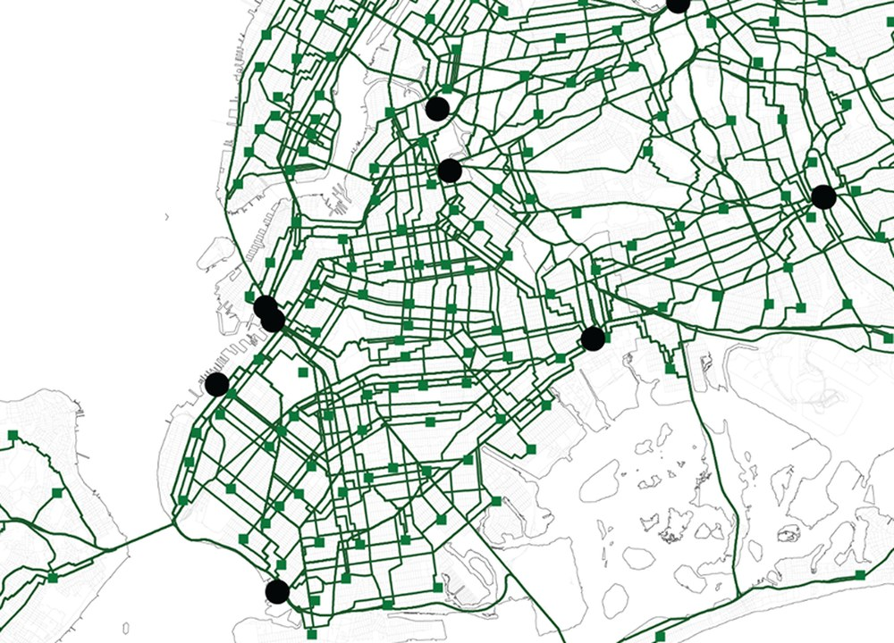
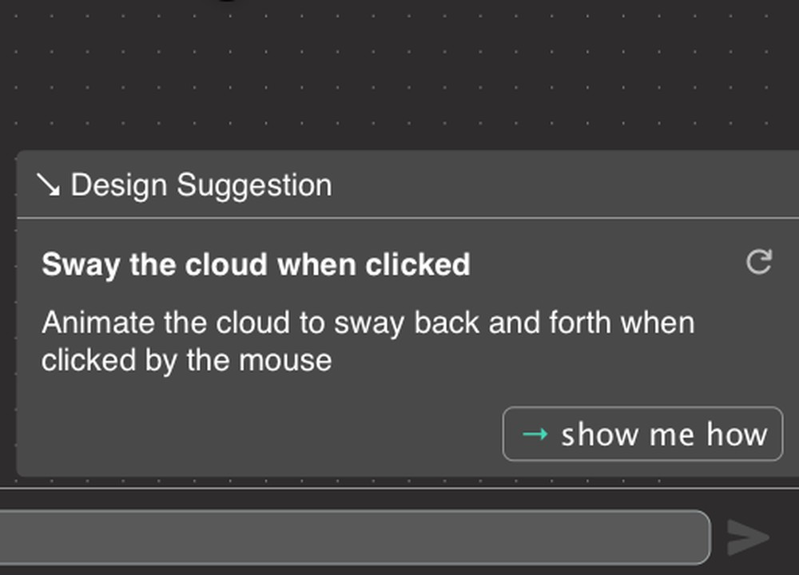
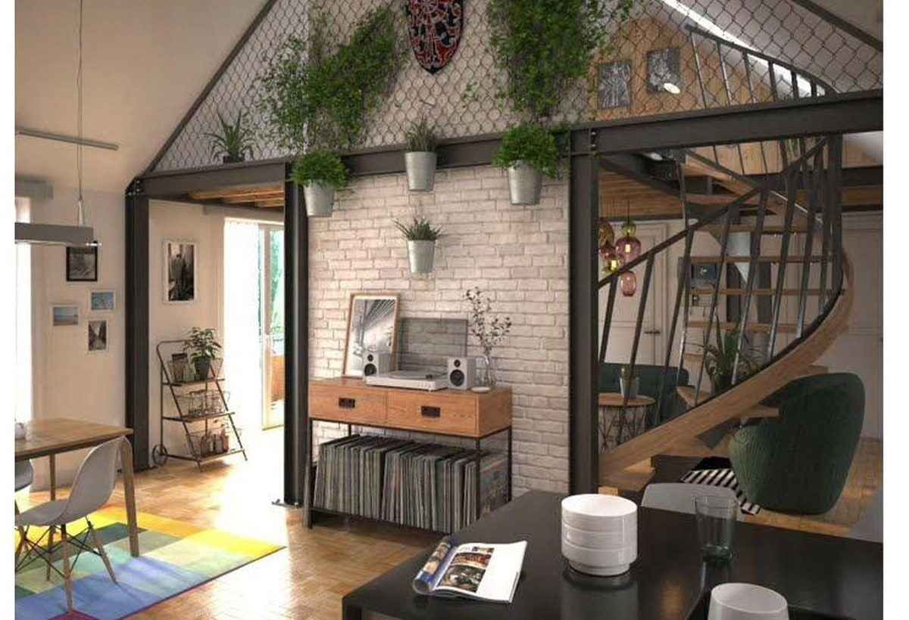

Zoe Homan
Computational design · Spatial analysis · Human‑computer interaction
Computer science major and architecture minor at Barnard College. I build spatial models, research interfaces, and machine learning systems, and I do the analysis and visual communication that go with them.
Across GIS modeling, AI tool design, and graphics, my projects converge on one question: what a representation makes visible, and what it leaves out. I report that as a finding in its own right.
- Languages
- Python · JavaScript · HTML/CSS
- Spatial
- ArcGIS Pro · Network Analyst · Spatial statistics · Cartography
- ML & Graphics
- PyTorch · CNNs / U‑Net · AWS GPU training · NumPy · pandas
- Interface
- React · Figma · Prototyping · User testing · Prompt design
- Methods
- Network analysis · Spatial modeling · Design research · Data visualization
Selected work
A spatial model of an infrastructure system, an AI feature for novice programmers, and a neural network trained to predict light.

Modeling Residential Waste Transportation
New York reports how much waste each district produces, but not how it moves. Three routing models over the city’s truck network, compared to show how a modeling assumption becomes a geography.
Case study
Design Suggestions for Flowcode
An AI feature that helps novice programmers find a next move without deciding it for them. Designed and built in React, then evaluated with eleven K‑8 educators.
Case study
Neural Shading for Architectural Scenes
A U‑Net trained to predict interior illumination from geometry and material. It learned the soft structure of light and never learned a shadow. Diagnosing why is the result.
Case studyAdditional Work
Further projects in computational design and spatial analysis are being documented.